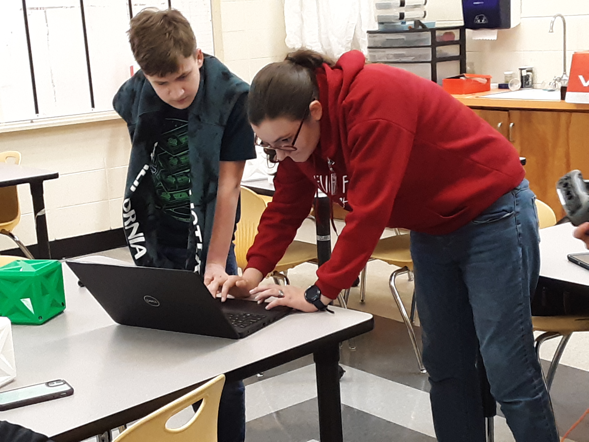

Enterprise Fall Festival
While fundraising, our chapter drove a VEX competition bot and talked
about what TSA is and what we do as a chapter. We sold 3D printed boll weevils desinged by a
former student, laser cut wooden ornaments with a picture of the bool weevil, and CNCed door hangers.
Unfrotunately, no one thought to take pictures of this year's fall festival booth, so we had to use
pictures from a previous year.
Blood Drive and Escape Room
Our chapter donated blood through the LifeSouth Bloodmobile on February 11th.
Immediately following the bllod drive, we participated in an escape room entitled "The Shack" at Escape Enterprise.
This was a great opportunity to do good for our community and then have fun as a chapter. Thanks to
everyone who came out to give blood and participate in the escape room.

Dauphin Robotics
Several of our chapter members helped the Dauphin VEX Robotics Teams
prepare their bots for competition. The DJHS robotics teams are led by Ms. Schmidt, Mrs. Watson,
and Mrs. Hatfiled, three STEM teachers at Dauphin. This was an amazing opportunity to get with
younger kids and teach them more about VEX robotics and the opportunties available to them once
they get to the high school.